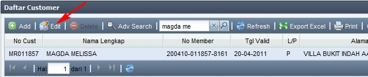
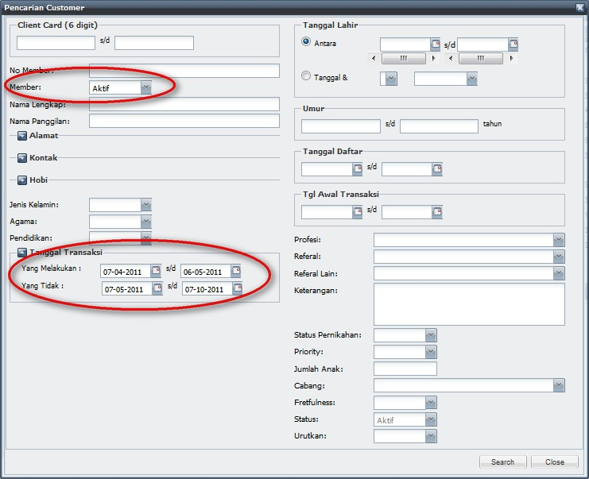
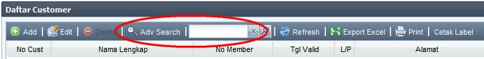
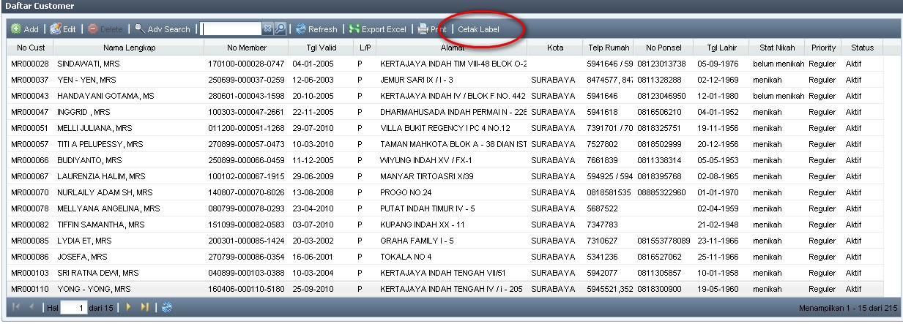
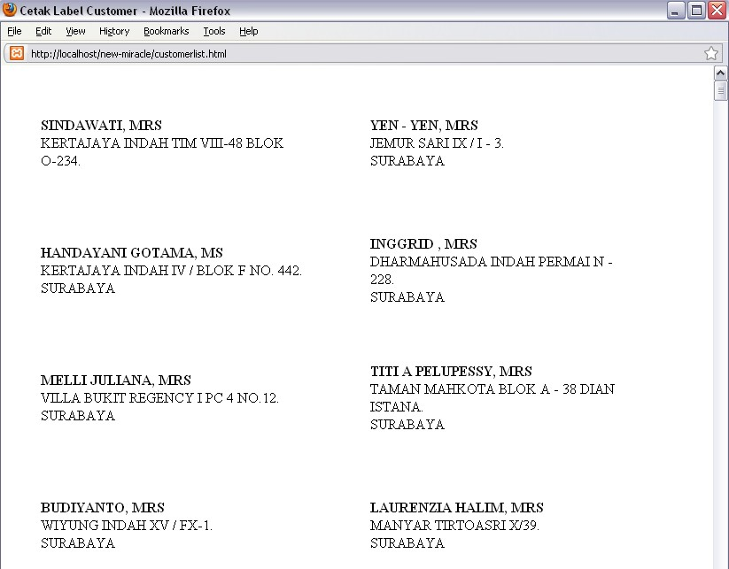
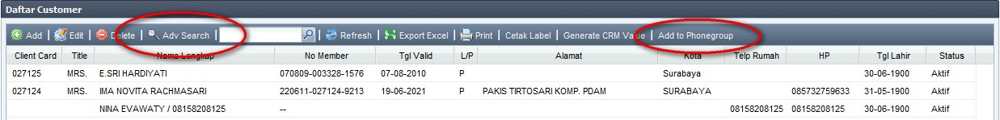

Mail Merge - MS Office 2003
Mail Merge adalah salah satu fitur dalam Microsoft Word untuk mangambil data secara otomatis dari database, tanpa kita perlu mengetikkannya satu per satu.
Data yang diambil bisa berupa nama, alamat, kota, telp, dll milik customer yg terdaftar di database MIS.
Berikut salah satu contoh untuk melakukan Mail Merge, dengan menggunakan database customer di MIS:
- Ambil data customer dari MIS dengan menggunakan Export Excel:
- Buka Master Data Customer (menu Master Data --> Customer)
- Cari kriteria customer yg diinginkan dengan menggunakan Adv Search
- klik Export Excel

- Simpan hasil Export di folder tertentu dan buka file hasil export tersebut maka akan muncul seperti gambar di bawah ini.

- Rapikan terlebih dahulu data mana saja yg akan ditampilkan di MS Word dan beri header diatas setiap filednya.
Contoh : ambil data Nama, Alamat, dan Kota. Maka akan menjadi seperti ini :

- Simpan file tersebut.
- Buka MS Word (contoh yg digunakan disini adalah MS Word 2003). Contoh: membuat surat pemberitahuan kepada customer.
- Aktifkan Mail Merge dengan cara: Klik Tools - Letters and Mailings - Show Mail Merge Toolbars. Maka Toolbars untuk Mail Merge akan nampak.
- Klik Open Data Source dan cari File Excel yg tadi sudah disimpan (customer.xls)
- Maka akan keluar Select Table - Klik OK
- Tekan Insert Merge Fields

- Maka akan muncul Insert Merge Field seperti pada gambar

- Pilih Field yang akan ditampilkan. Maka akan muncul seperti pada gambar :

- Atur posisi dengan betul sehingga menjadi seperti ini :

- Lalu tekan View Merged Data.

- Maka akan muncul seperti pada gambar. Untuk ke data berikutnya tekan Next Record.

Demikian langkah-langkah untuk mengambil data dengan Mail Merge.
Copyright © 2010, IT Department of Miracle Aesthetic Clinic Group
Created with the Freeware Edition of HelpNDoc: Easy CHM and documentation editor